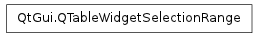

QTableWidgetSelectionRange ¶

Synopsis ¶
Functions ¶
- def bottomRow ()
- def columnCount ()
- def leftColumn ()
- def rightColumn ()
- def rowCount ()
- def topRow ()
Detailed Description ¶
The PySide.QtGui.QTableWidgetSelectionRange class provides a way to interact with selection in a model without using model indexes and a selection model.
The PySide.QtGui.QTableWidgetSelectionRange class stores the top left and bottom right rows and columns of a selection range in a table. The selections in the table may consist of several selection ranges.
Note
If the item within the selection range is marked as not selectable, e.g., itemFlags() & Qt::ItemIsSelectable == 0 then it will not appear in the selection range.
See also
- class PySide.QtGui. QTableWidgetSelectionRange ¶
- class PySide.QtGui. QTableWidgetSelectionRange ( other )
- class PySide.QtGui. QTableWidgetSelectionRange ( top , left , bottom , right )
-
Parameters: - right – PySide.QtCore.int
- left – PySide.QtCore.int
- other – PySide.QtGui.QTableWidgetSelectionRange
- bottom – PySide.QtCore.int
- top – PySide.QtCore.int
Constructs an table selection range, i.e. a range whose PySide.QtGui.QTableWidgetSelectionRange.rowCount() and PySide.QtGui.QTableWidgetSelectionRange.columnCount() are 0.
Constructs a the table selection range by copying the given other table selection range.
Constructs the table selection range from the given top , left , bottom and right table rows and columns.
- PySide.QtGui.QTableWidgetSelectionRange. bottomRow ( ) ¶
-
Return type: PySide.QtCore.int Returns the bottom row of the range.
- PySide.QtGui.QTableWidgetSelectionRange. columnCount ( ) ¶
-
Return type: PySide.QtCore.int Returns the number of columns in the range.
This is equivalent to PySide.QtGui.QTableWidgetSelectionRange.rightColumn() - PySide.QtGui.QTableWidgetSelectionRange.leftColumn() + 1.
- PySide.QtGui.QTableWidgetSelectionRange. leftColumn ( ) ¶
-
Return type: PySide.QtCore.int Returns the left column of the range.
- PySide.QtGui.QTableWidgetSelectionRange. rightColumn ( ) ¶
-
Return type: PySide.QtCore.int Returns the right column of the range.
- PySide.QtGui.QTableWidgetSelectionRange. rowCount ( ) ¶
-
Return type: PySide.QtCore.int Returns the number of rows in the range.
This is equivalent to PySide.QtGui.QTableWidgetSelectionRange.bottomRow() - PySide.QtGui.QTableWidgetSelectionRange.topRow() + 1.
- PySide.QtGui.QTableWidgetSelectionRange. topRow ( ) ¶
-
Return type: PySide.QtCore.int Returns the top row of the range.